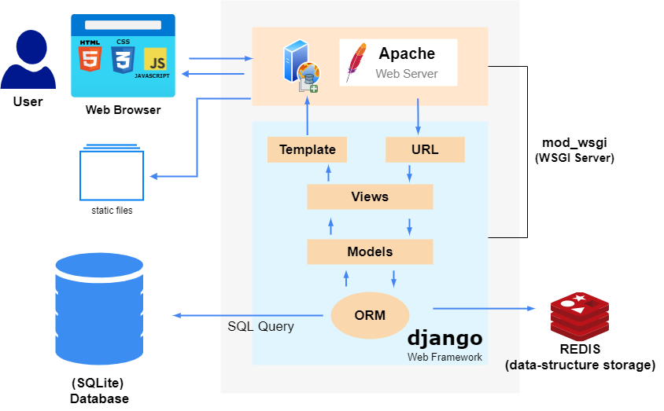
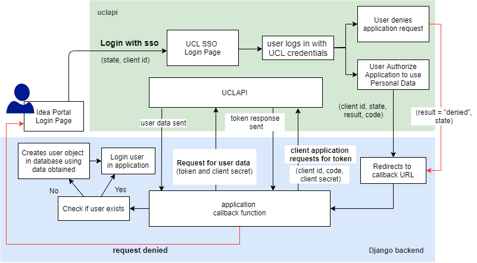
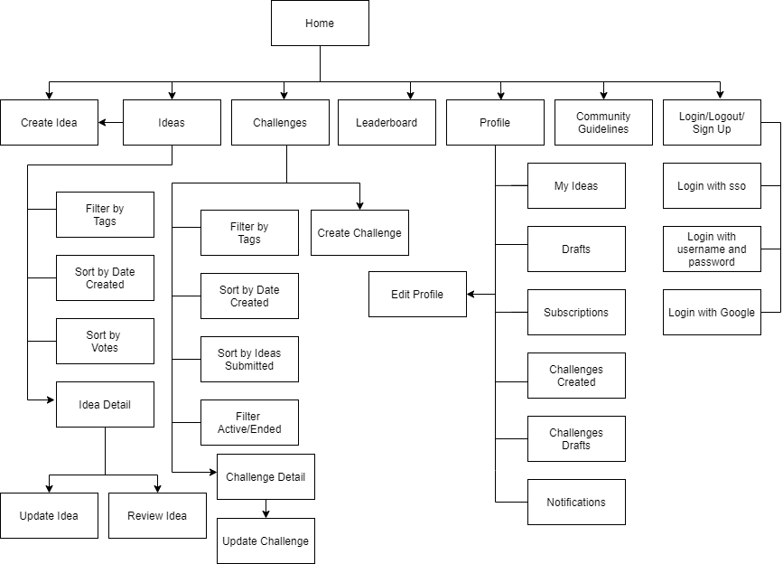
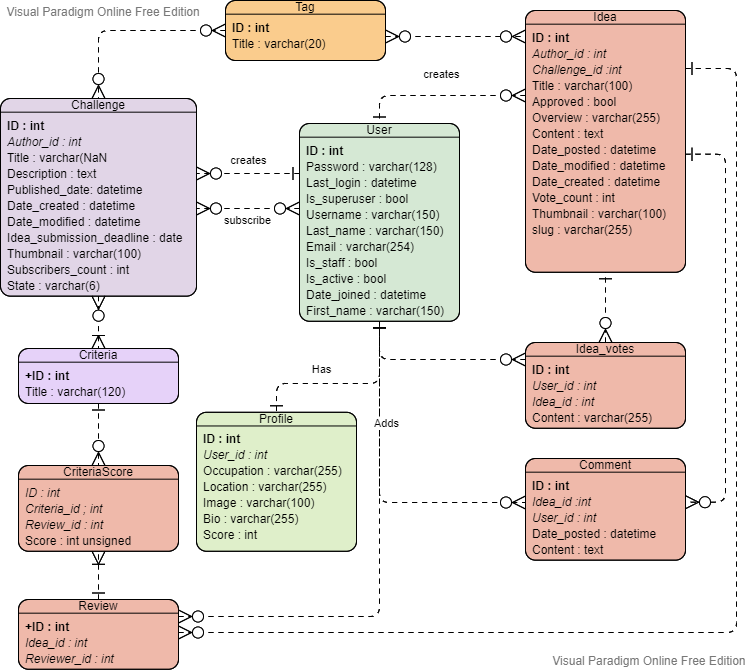
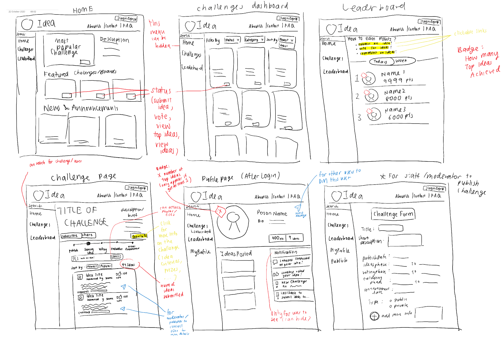

System Design
System Architecture Diagram

Our project uses Django (python web application framework) which uses a MTV (model-template-view) pattern.
Template is the client side presentation layer that controls the user interface architecture and the content to display by using a mixture of HTML and DTL (Django Template Language) to display dynamic variables and perform few logical operations so that each user is displayed with personalised data.
The url dispatcher in django maps requested URL to a view function in the application and calls it. View handles the logical part of the application and interacts with the Model to get the data and in turn modifies the template accordingly.
In Django, Model handles the data and describes structure of stored data. It does the linking to the database and each model gets mapped to a single table in the database. We can then perform different DML (data manipulation language) operations on the table to fetch or modify data in database.
The django framework includes a default object-relational mapping layer (ORM) that is used for interaction between the application model and the relational database for transmission of data. ORMs automatically create a database schema from defined models and generate SQL queries from python code, which is used to CRUD data in our system. This allows rapid development as no SQL needs to be manually written.
Apache is used as the web server to handle http requests, mostly massive requests such as static files (css,js,images) so that the django aplication can focus on other requests on functionalities of the application. Since the web server do not understand python, the WSGI server (implemented using mod_wsgi) acts as an interface between the Apache front end server and the django application.
SSO data flow architecture

Besides the built in authentication system in our portal (using username and password),
this portal also integrates UCL sso authentication and authorisation API. When ucl sso login option is chosen,
user is redirected to the ucl sso page to allow user to login to their ucl account (if not already).
If authorisation request is granted,
user will then be redirected to the callback url where user would login to the application successfully if no errors occur during exchange of
information between uclapi and our application.
Page Flow Diagram

Data Storage
Entity-Relationship Diagram

Role of each table:
User - Stores user account details and credentials to authenticate user.
Profile - Stores personal information about user obtained from profile form updated by user.
Challenge - Stores data relating to the challenge submitted through challenge submission form, including the author, content, deadline for idea submission and date fields. Also stores challenge state (active/ended).
Idea - Stores idea submitted through an idea submission form, and also other data relating to idea including vote count. The approved column is set to false by default and will only be displayed in portal after it has been approved in admin page. The three date columns indicates the date idea is submitted (not as draft), the last modified date and the date the idea is created.
Tag - Stores the description of categories used to classify ideas and challenges. For example, departmental tags can be defined to look for ideas for a specific healthcare sector in NHS.
Comment - Stores the comments on an idea by a user.
Review - Stores the data of each idea review, including the user that did the review and the idea being reviewed. Has a one to many relationship with CriteriaScore as each review contains a list of scores each linked to a criteria depending on the criterias specified in the challenge which the idea is submitted to.
CriteriaScore - Stores score for each criteria and the review object when a review is submitted. Score is given a range from 0 to 10.
User Interface Design
Sketches
In the designing stage, we sketched out a rough idea on the look of our page based on the requirements and feedback obtained from potential users.
Design Principles
Clarity
Our portal provides an easy-to-use interface to avoid confusion by providing clear instructions of what the portal is for and how to get started in the home page. Click targets(buttons) are easy to recognize and easy to predict what will happen next.
Requirements for password are also clearly listed in sign up form to avoid confusion and having to repeat action. Other form fields also have help texts for further clarification of field functions. If any field data is invalid, form shows user where error is and provides reason.


Feedback
Immediate feedbacks are given to indicate user action has been acknowledged. For example, a green message pops up at the top of page whenever user successfully signs in or update profile.


Vote and subscribe buttons changes to unvote and unsubscribe respectively, with count changing beside it to notify that action has been registered.


Simplicity
To reduce amount of content and variety of options on a single page, filter options are hidden to provide cleaner interface. Filter options are easily accessed by clicking on filter button.
Consistency
To create familiarity for better user experience, icons, buttons and styles follow a consistent design.
Layout of ideas and challenges dashboards are similar, with same filter and sort buttons indicating same behaviour of the buttons in different pages. Forms in the portal also have similar layout and styling
Visual design
Placing varying emphasis on different key attributes such as title, content and tags is achieved by using different font sizes and styling
Idea and Challenge detail pages are styled as a single column layout (similar to medium articles) with clear hierarchy to make content easier to scan and read.
Widely understood symbols such as the idea, comment , calendar, edit and trashcan(for delete) icons are used to represent commonly used actions to minimize recall in favour of recognition.
Confirmation
For actions that are important and irreversible, confirmation is required to prevent accidental action errors. For example, confirmation message is shown for delete actions.